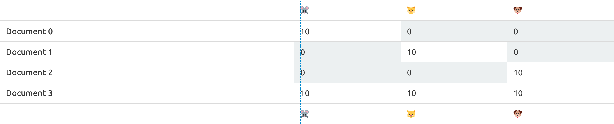
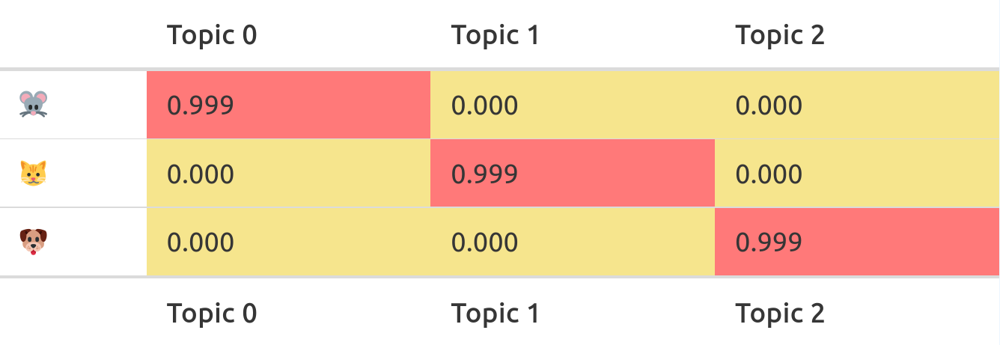
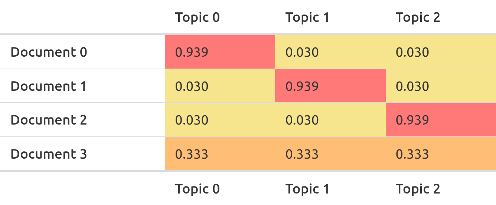

# note: I leave this here to show you how I processed the data
# after download from dataverse. The original file is not in the course material.
bundestag18 <- readRDS("data/Corp_Bundestag_V2.rds") %>%
mutate(date = ymd(date),
speechnumber = as.integer(speechnumber)) %>%
filter(date >= "2013-10-22",
date <= "2017-10-24")
saveRDS(bundestag18, "data/bundestag18_speeches.rds")Session 7: Unsupervised Machine Learning
Textanalyse in R: eine Einführung
Introduction
LDA, which stands for Latent Dirichlet Allocation, is one of the most popular approaches for probabilistic topic modeling. The goal of topic modeling is to automatically assign topics to documents without requiring human supervision. Although the idea of an algorithm figuring out topics might sound close to magical (mostly because people have too high expectations of what these ‘topics’ are), and the mathematics might be a bit challenging, it is actually really simple fit an LDA topic model in R.
A good first step towards understanding what topic models are and how they can be useful, is to simply play around with them, so that’s what we’ll do first.
Playful exploration1
Open the page https://lettier.com/projects/lda-topic-modeling/ (if possible, in Firefox)
Example Docs:
- 🐭 🐭 🐭 🐭 🐭 🐭 🐭 🐭 🐭 🐭
- 🐱 🐱 🐱 🐱 🐱 🐱 🐱 🐱 🐱 🐱
- 🐶 🐶 🐶 🐶 🐶 🐶 🐶 🐶 🐶 🐶
- 🐭 🐭 🐭 🐭 🐭 🐭 🐭 🐭 🐭 🐭 🐱 🐱 🐱 🐱 🐱 🐱 🐱 🐱 🐱 🐱 🐶 🐶 🐶 🐶 🐶 🐶 🐶 🐶 🐶 🐶
On top, the texts are turned into a document feature matrix.

What LDA does is essentially to reduce the dimensions of a text into a set of ‘topics’ that are easier to interpret. It then expresses the relation between cases and topics, as well as variables and topics in two matrices. If you have used PCA, MDS or factor analysis before, this is essentially the same process.
The first matrix describes the probability a feature belongs to a topic. We call this the feature-topic-matrix.

The second table describes does the same, but with documents. We call this the document-term-matrix.

This case makes it pretty clear: mice belong to the first topic, cats belong to the second, dogs belong to the third topic. The first document has a high probability to belong to the first topic, because it is full of mice. The second document has a high probability to belong to the second topic, because it is full of cats. The third document has a high probability to belong to the third topic, because it is full of dogs.
What makes LDA often seem magical, is how well it works for text. This is because the underlying assumptions fit the statistical features of document collections quite well, leading to meaningful and interpretable categories that make it easy to explore and summarise what is happening in text.
The short example above shows the three broad steps of topic modelling:
- Create a document-feature-matrix from your documents (and preprocess it)
- Fit the topic model
- Analyze (and validate) the results
Before we go on, here are a few things I want you to try:
- Change the Alpha and Beta values
- Add and replace your own text
- Change the number of topics
(0) Obtaining the data
We use a subset of the Parlspeech corpus (parlspeech2020?), spanning the 18th legislative period of the Bundestag.
if (!file.exists("data/bundestag18_speeches.rds")) {
curl::curl_download("https://www.dropbox.com/s/gn971s2ea3zbfgt/bundestag18_speeches.rds?dl=1", "data/bundestag18_speeches.rds", quiet = FALSE)
}
bundestag18 <- readRDS("data/bundestag18_speeches.rds") %>%
mutate(doc_id = paste0(date, "-", speechnumber)) %>%
as_tibble()(1) Creating a DFM
We first tidy the documents:
library(tidytext)
bundestag18_tidy <- bundestag18 %>%
unnest_tokens(output = word, input = "text")Secondly, we do some light cleaning:
- removing stopwords
- lemmatisation
- removing rare terms
- removing features that aren’t words
bundestag18_tidy_clean <- bundestag18_tidy %>%
filter(!word %in% c(stopwords::stopwords(language = "de"),
"dass", "kollege", "kollegin", "herr", "frau", "dr")) %>%
group_by(word) %>%
filter(
n() > 10, # keep features that appears more than 10 times
!str_detect(word, "[^a-z]") # keep features that consist only of characters
) %>%
ungroup()
print(glue::glue(
"Cleaning removed {length(unique(bundestag18_tidy$word)) - length(unique(bundestag18_tidy_clean$word))} ",
"unique words and ",
"{length(unique(bundestag18_tidy$doc_id)) - length(unique(bundestag18_tidy_clean$doc_id))} documents. ",
"{length(unique(bundestag18_tidy$word))} unique words remain in ",
"{length(unique(bundestag18_tidy$doc_id))} documents"
))Cleaning removed 197068 unique words and 986 documents. 224189 unique words remain in 52784 documentsNow we can create a document-feature-matrix. This is a (sparse) matrix showing how often each term (column) occurs in each document (row):
bundestag18_dfm <- bundestag18_tidy_clean %>%
count(doc_id, word) %>%
cast_dfm(doc_id, word, n)We can inspect a corner of the dtm by casting it to a regular (dense) matrix:
as.matrix(bundestag18_dfm[1:5, 1:5]) features
docs abgeordnete abgeordneten abgeordneter abs abschluss
2013-10-22-1 2 2 2 1 1
2013-10-22-10 0 1 0 0 0
2013-10-22-11 0 0 0 0 0
2013-10-22-12 0 0 0 0 0
2013-10-22-13 0 0 0 0 0(2) Running the topic model
We can now fit the topic model from the dfm using the textmodel_lda() functin from the seededlda package. I like this package because of how simple and fast it is to use. In most tutorials use the topicmodels or lda package, which are also good. (stay away from mallet.) Note that we use set.seed to create reproducible results since topic modeling invlvoes random re-sampling (meaning each run will yield slighly different results).
library(seededlda)
set.seed(1)
k <- 10
lda_model <- textmodel_lda(
bundestag18_dfm,
k = k, # the number of topics is chosen at random for demonstration purposes
max_iter = 200, # I would not usually recommend that few iterations, it's just so it runs quicker here
alpha = 50 / k, # these are the default values in the package
beta = 0.1,
verbose = TRUE
)Fitting LDA with 10 topics
...initializing
...Gibbs sampling in 200 itterations
...iteration 100
...iteration 200
...computing theta and phi
...complete(3) Inspecting and analysing the results
Word-topic probabilities
We first check the feature-topic-matrix (it’s actually a topic-feature-matrix as rows and columns are swapped, but that doesn’t really matter). The ftm in this model, however, has 27121 columns (one for each input feature), which makes this impossible to go through. Rather, we look at the words with the highest values in each topic. The value in the ftm is referred to as \(\phi\) (or phi) (other implementations of LDA confusingly name this \(\beta\) (beta)). We extract and plot the highest phi values for all topics
bundestag18_ftm <- lda_model$phi %>%
as.data.frame() %>% # converting the matrix into a data.frame makes sure it plays nicely with the tidyverse
rownames_to_column("topic") %>% # the topic names/numbers are stored in the row.names, I move them to a column
mutate(topic = fct_inorder(topic)) %>% # turn to factor to maintain the correct order
pivot_longer(-topic, names_to = "word", values_to = "phi")
topic_topwords_plot <- bundestag18_ftm %>% # turn to long for plotting
group_by(topic) %>% # using group_by and slice_max, we keep only the top 10 values from each topic
slice_max(order_by = phi, n = 15) %>%
# using reorder_within does some magic for a nicer plot
mutate(word = tidytext::reorder_within(word, by = phi, within = topic)) %>%
# from here on, we just make a bar plot with facets
ggplot(aes(x = phi, y = word, fill = topic)) +
geom_col() +
tidytext::scale_y_reordered() +
facet_wrap(~topic, ncol = 2, scales = "free_y")
topic_topwords_plot
Going forward, I would now name these topics. I found this particular format in a Excel sheet helpful.
lda_model$phi %>%
as.data.frame() %>%
rowid_to_column("topic") %>%
pivot_longer(-topic, names_to = "word", values_to = "phi") %>%
group_by(topic) %>%
slice_max(order_by = phi, n = 20) %>%
mutate(top = row_number()) %>%
pivot_wider(id_cols = top, names_from = topic, values_from = word) %>%
# Add an extra row where you can write in topic names
add_row(top = NA, .before = 1) %>%
rio::export("7._topicsmodel_topwords.xlsx")Topics per document
Similary to above, we can also extract to topics per document:
bundestag18_dtm <- lda_model$theta %>%
as.data.frame() %>%
rownames_to_column("doc_id") %>%
as_tibble()
bundestag18_dtm# A tibble: 51,798 × 11
doc_id topic1 topic2 topic3 topic4 topic5 topic6 topic7 topic8 topic9 topic10
<chr> <dbl> <dbl> <dbl> <dbl> <dbl> <dbl> <dbl> <dbl> <dbl> <dbl>
1 2013-… 0.0853 0.0593 0.0621 0.343 0.0297 0.0195 0.0482 0.0834 0.235 0.0343
2 2013-… 0.263 0.0421 0.0281 0.109 0.196 0.0491 0.0526 0.0386 0.116 0.105
3 2013-… 0.0980 0.0980 0.118 0.0980 0.0980 0.0980 0.0980 0.0980 0.0980 0.0980
4 2013-… 0.1 0.0875 0.075 0.1 0.112 0.162 0.0625 0.075 0.162 0.0625
5 2013-… 0.0909 0.0909 0.145 0.0909 0.0909 0.0909 0.0909 0.0909 0.0909 0.127
6 2013-… 0.245 0.0745 0.0266 0.0426 0.0904 0.0691 0.0745 0.0479 0.144 0.186
7 2013-… 0.0943 0.0943 0.113 0.0943 0.0943 0.0943 0.0943 0.0943 0.0943 0.132
8 2013-… 0.301 0.0725 0.0362 0.0761 0.101 0.127 0.0290 0.0362 0.109 0.112
9 2013-… 0.0639 0.0414 0.0789 0.0414 0.128 0.0677 0.0451 0.0301 0.0526 0.451
10 2013-… 0.103 0.0841 0.112 0.0748 0.131 0.0654 0.0654 0.0654 0.0561 0.243
# ℹ 51,788 more rowsWe can tidy this and join the results back with the original metadata using the doc_id:
bundestag18_dtm_tidy <- bundestag18_dtm %>%
pivot_longer(-doc_id, names_to = "topic", values_to = "theta") %>%
# again this is to keep track of the order as it is otherwise order by alphabet
mutate(topic = fct_inorder(topic)) %>%
left_join(bundestag18 %>% select(-text), by = "doc_id")
bundestag18_dtm_tidy# A tibble: 517,980 × 13
doc_id topic theta date agenda speechnumber speaker party
<chr> <fct> <dbl> <date> <chr> <int> <chr> <chr>
1 2013-10-22-1 topic1 0.0853 2013-10-22 SITZUNGSBE… 1 Heinz … <NA>
2 2013-10-22-1 topic2 0.0593 2013-10-22 SITZUNGSBE… 1 Heinz … <NA>
3 2013-10-22-1 topic3 0.0621 2013-10-22 SITZUNGSBE… 1 Heinz … <NA>
4 2013-10-22-1 topic4 0.343 2013-10-22 SITZUNGSBE… 1 Heinz … <NA>
5 2013-10-22-1 topic5 0.0297 2013-10-22 SITZUNGSBE… 1 Heinz … <NA>
6 2013-10-22-1 topic6 0.0195 2013-10-22 SITZUNGSBE… 1 Heinz … <NA>
7 2013-10-22-1 topic7 0.0482 2013-10-22 SITZUNGSBE… 1 Heinz … <NA>
8 2013-10-22-1 topic8 0.0834 2013-10-22 SITZUNGSBE… 1 Heinz … <NA>
9 2013-10-22-1 topic9 0.235 2013-10-22 SITZUNGSBE… 1 Heinz … <NA>
10 2013-10-22-1 topic10 0.0343 2013-10-22 SITZUNGSBE… 1 Heinz … <NA>
# ℹ 517,970 more rows
# ℹ 5 more variables: party.facts.id <dbl>, chair <lgl>, terms <dbl>,
# parliament <chr>, iso3country <chr>Now, we can e.g. compare topic usage per party:
bundestag18_dtm_tidy %>%
filter(!is.na(party),
party != "independent") %>%
group_by(party, topic) %>%
summarize(theta = mean(theta)) %>%
ggplot(aes(x = theta, y = topic, fill = party)) +
geom_col(position = "dodge") +
scale_fill_manual(values = c(
"PDS/LINKE" = "#BD3075",
"SPD" = "#D71F1D",
"GRUENE" = "#78BC1B",
"CDU/CSU" = "#121212",
"FDP" = "#FFCC00",
"AfD" = "#4176C2"
))
What sticks out is how often the AfD uses topic one.
Or over time:
bundestag18_dtm_tidy %>%
group_by(date = floor_date(date, "months"), topic) %>%
summarize(theta = mean(theta)) %>%
ggplot(aes(x = date, y = theta, colour = topic)) +
geom_line()
bundestag18_dtm_tidy %>%
group_by(date = floor_date(date, "months"), topic) %>%
summarize(theta = mean(theta)) %>%
ggplot(aes(x = date, y = theta, colour = topic)) +
geom_line() +
facet_wrap(vars(topic))
Again, topic 1 seems quite special with an explosion of prevalence in the second half of 2015.
Some alternative ways to explore the model
LDAvis
A popular way of exploring topics and how they overlap is the LDAvis package.
library(LDAvis)
json <- createJSON(phi = lda_model$phi,
theta = lda_model$theta,
doc.length = quanteda::ntoken(lda_model$data),
vocab = quanteda::featnames(lda_model$data),
term.frequency = quanteda::featfreq(lda_model$data))
serVis(json)LDAvis helps users understand the relationships between topics and the key terms that define them.
The LDAvis visualization consists of two main components:
- Intertopic Distance Map: This is a two-dimensional plot displaying the distribution of topics. Each topic is represented by a circle, and its size indicates the relative prevalence of the topic in the corpus (important: the number inside the circle is not the topic number we used above! LDAvis assigns 1 to the larges topic, 2 is the second largest et.c). The distance between the circles represents the similarity or dissimilarity between topics. Topics that are closer together share more common terms, while topics further apart are more distinct.
- Top-Ranking Terms: This panel shows the most relevant terms for a selected topic. Relevance is determined by a combination of term frequency within the topic and the term’s distinctiveness across topics. By examining the top-ranking terms, users can gain insights into the thematic content of each topic. If no topic is selected, it displays the overall salience of words.
To interpret the LDAvis visualization, follow these steps:
- Examine the Intertopic Distance Map to understand the overall topic structure. Look for clusters of closely related topics or distinct groups of unrelated topics. Click on a topic circle to view the Top-Ranking Terms for that topic in the right panel. Assess the terms to infer the underlying theme or subject matter of the topic. Adjust the relevance metric (usually denoted by λ) to emphasize either term frequency within the topic or distinctiveness across topics, depending on your analysis goals. Repeat steps 2-3 for other topics to gain a comprehensive understanding of the thematic structure of your corpus. By leveraging LDAvis, users can efficiently interpret LDA-generated topics and gain valuable insights into the underlying structure and themes of large text corpora.
tokenbrowser
We can check how the probabilities for documents are calculated by looking at the words and topic probabilities in their original context using the using the tokenbrowser package developed by Kasper Welbers
We first select the 2000 tokens with the highest phi value, i.e., the ones which most clearly belong to one topic.
categories <- bundestag18_ftm %>%
group_by(word) %>%
mutate(phi_rel = phi / sum(phi)) %>%
slice_max(order_by = phi, n = 1) %>%
ungroup() %>%
filter(phi_rel >= 0.5)Then we attach the categories to the original tidy representation of the texts.
assignments <- bundestag18_tidy %>%
filter(doc_id %in% unique(bundestag18_tidy$doc_id)[1:5]) %>%
left_join(categories, by = "word")Now we can look at the words that clearly belong to a topic in context of the full speeches.
library(tokenbrowser)
categorical_browser(
assignments,
category = as.factor(assignments$topic),
token_col = "word"
) %>%
browseURL()Finding an optimal number of topics
The best way to find the optimal \(k\) number of topics is to interpret different models and look for the ones that seems to divide your corpus into the most meaningful topics. However, this can be very cumbersome and there are some statistical methods to make the process easier. The idea behind all of them is to compare the metrics of different models to narrow your search down.
lda_fun <- function(k, max_iter = 20) {
textmodel_lda(
bundestag18_dfm,
k = k,
max_iter = max_iter,
alpha = 50 / k,
beta = 0.1,
verbose = TRUE
)
}
models_df <- tibble(
k = c(10:20),
model = map(k, lda_fun)
)Fitting LDA with 10 topics
...initializing
...Gibbs sampling in 20 itterations
...computing theta and phi
...complete
Fitting LDA with 11 topics
...initializing
...Gibbs sampling in 20 itterations
...computing theta and phi
...complete
Fitting LDA with 12 topics
...initializing
...Gibbs sampling in 20 itterations
...computing theta and phi
...complete
Fitting LDA with 13 topics
...initializing
...Gibbs sampling in 20 itterations
...computing theta and phi
...complete
Fitting LDA with 14 topics
...initializing
...Gibbs sampling in 20 itterations
...computing theta and phi
...complete
Fitting LDA with 15 topics
...initializing
...Gibbs sampling in 20 itterations
...computing theta and phi
...complete
Fitting LDA with 16 topics
...initializing
...Gibbs sampling in 20 itterations
...computing theta and phi
...complete
Fitting LDA with 17 topics
...initializing
...Gibbs sampling in 20 itterations
...computing theta and phi
...complete
Fitting LDA with 18 topics
...initializing
...Gibbs sampling in 20 itterations
...computing theta and phi
...complete
Fitting LDA with 19 topics
...initializing
...Gibbs sampling in 20 itterations
...computing theta and phi
...complete
Fitting LDA with 20 topics
...initializing
...Gibbs sampling in 20 itterations
...computing theta and phi
...completeThere is no official function in seededlda to evaluate different models. The stm package is much better here as demonstrated by Julia Silge. But since I did not want to introduce another package, I copied the functions that are currently discussed from this issue on GitHub.
semantic_coherence <- function(model, top_n = 10) {
h <- apply(terms(model, top_n), 2, function(y) {
d <- model$data[,y]
e <- Matrix::Matrix(docfreq(d), nrow = nfeat(d), ncol = nfeat(d))
f <- fcm(d, count = "boolean") + 1
g <- Matrix::band(log(f / e), 1, ncol(f))
sum(g)
})
sum(h)
}
divergence <- function(model) {
div <- proxyC::dist(model$phi, method = "kullback")
diag(div) <- NA
mean(as.matrix(div), na.rm = TRUE)
}
# this one is taken from stm https://github.com/bstewart/stm/blob/master/R/exclusivity.R
exclusivity <- function(model, top_n = 10, frexw = 0.7) {
tphi <- t(exp(model$phi))
s <- rowSums(tphi)
mat <- tphi / s # normed by columns of beta now.
ex <- apply(mat, 2, rank) / nrow(mat)
fr <- apply(tphi, 2, rank) / nrow(mat)
frex <- 1 / (frexw / ex + (1 - frexw) / fr)
index <- apply(tphi, 2, order, decreasing = TRUE)[1:top_n, ]
out <- vector(length = ncol(tphi))
for (i in seq_len(ncol(frex))) {
out[i] <- sum(frex[index[, i], i])
}
return(mean(out))
}We can now use this plot to evaluate the different models.
models_df_metrics <- models_df %>%
mutate(semantic_coherence = map_dbl(model, semantic_coherence),
exclusivity = map_dbl(model, exclusivity),
divergence = map_dbl(model, divergence))
models_df_metrics %>%
select(-model) %>%
pivot_longer(-k, names_to = "metric") %>%
ggplot(aes(x = k, value, color = metric)) +
geom_line(linewidth = 1.5, alpha = 0.7, show.legend = FALSE) +
scale_x_continuous(breaks = scales::pretty_breaks()) +
facet_wrap(~metric, scales = "free_y") +
labs(x = "K (number of topics)",
y = NULL,
title = "Model diagnostics by number of topics",
subtitle = "Higher = Better")
Footnotes
heavily influenced by this piece: https://medium.com/(lettier/how-does-lda-work-ill-explain-using-emoji-108abf40fa7d?)↩︎